السلسلة 19
السيارة (صنف B) · 40 سؤال. كل سؤال فيه الصورة والصوت. اختار الجواب (ولا جوج إلا كانو صحاح)، ورك على «تأكيد» باش تشوف واش صبتي.
- 40سؤال
- 32باش تنجح
- 1 – 4جواب واحد ولا أكثر
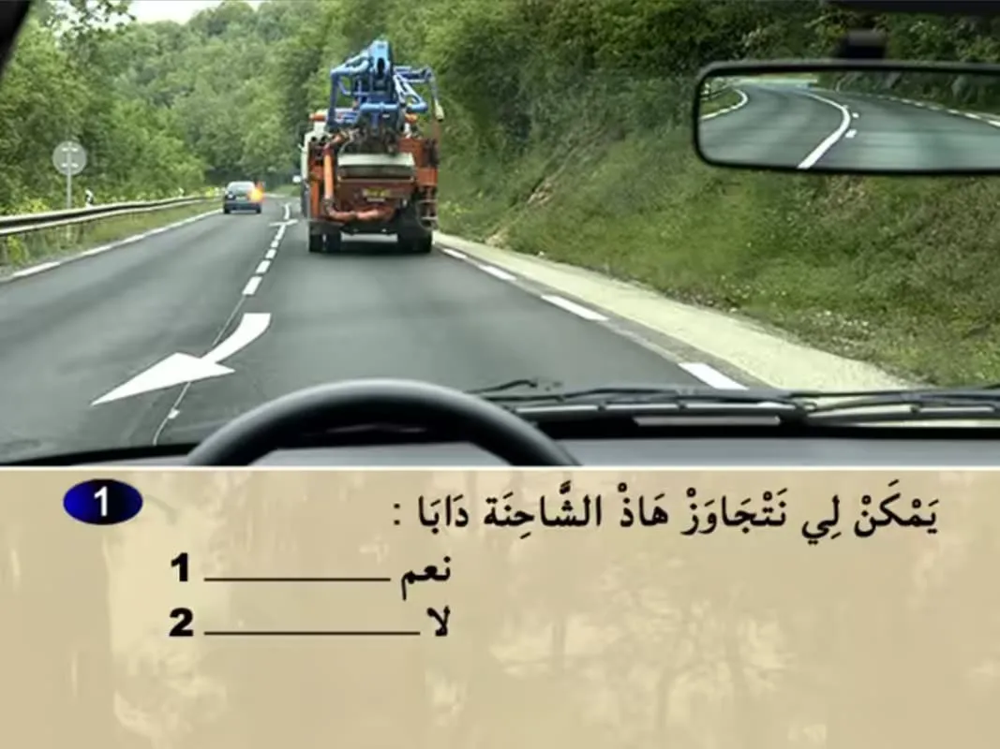
الكلافيي: 1–4 للجواب، Enter للتأكيد وللسؤال الجاي.
السلسلة 19 · النتيجة ديالك
0 / 40
السلسلة 19
السيارة (صنف B) · 40 سؤال، بالصوت، مع الجواب الصحيح والشرح.
السؤال 1
بيّن الجواب
الجواب الصحيح: 2
عندما نتواجد في طريق ذات اتجاهين مثلا في طريق وطنية فلا يمكننا أن نقوم بإتباع سيارة تقوم بعملية التجاوز لعربة أخرى. إذن في هذه الحالة لا يمكننا أن نتجاوز هذه الشاحنة.
السؤال 2
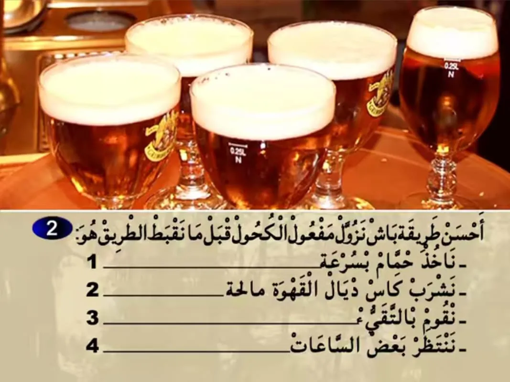
بيّن الجواب
الجواب الصحيح: 4
احسن طريقة هي يجب انتظار بعض الساعات لإزالة مفعول المشروبات الكحولية قبل السياقة.
السؤال 3
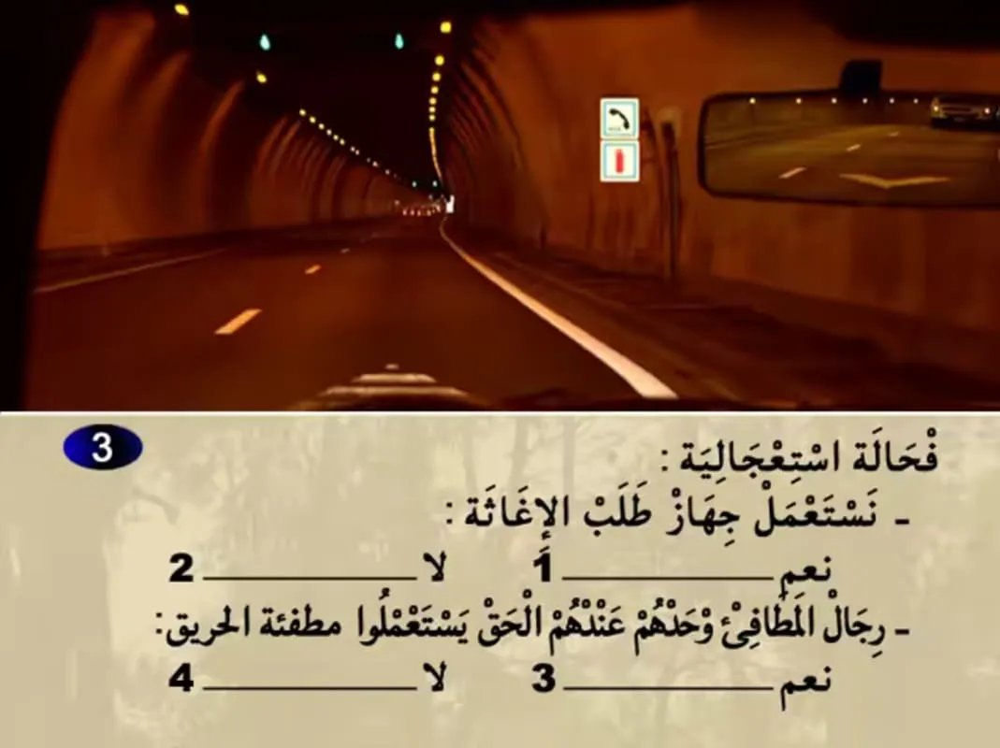
بيّن الجواب
الجواب الصحيح: 1 و 4
عند وقوع عطب مفاجئ أو أنا في حالة استعجالية فمن الممكن استعمال جهاز طلب الإغاثة، كما أن مطفئة الحريق يمكن لأي شخص أن يستعملها في الحالات الاستعجالية وليس فقط رجال المطافئ.
السؤال 4
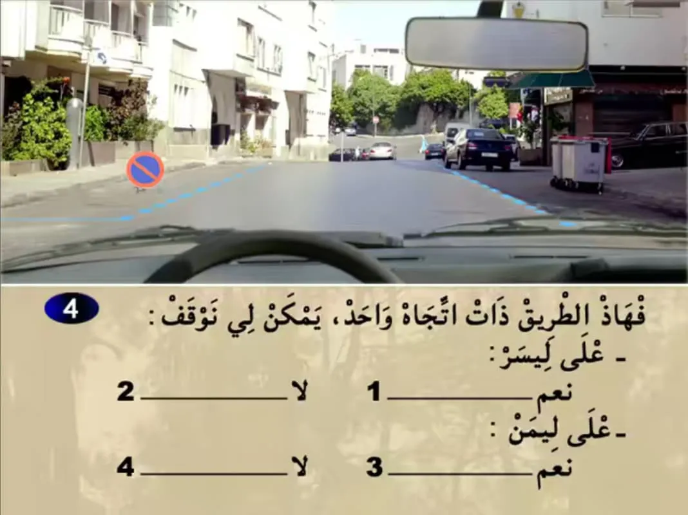
بيّن الجواب
الجواب الصحيح: 1 و 3
في الطريق التي تكون ذات إتجاه واحد فيمكننا الوقوف والتوقّف في الجهة اليمنى أو اليسرى، في هذه الحالة التوقّف ممنوع لأن العلامة تشير إلى منع التوقّف، لكن بالنسبة للوقوف فيمكننا الوقوف لأنه لا توجد علامة طرقية تمنعنا من الوقوف على اليمين أو اليسار.
السؤال 5
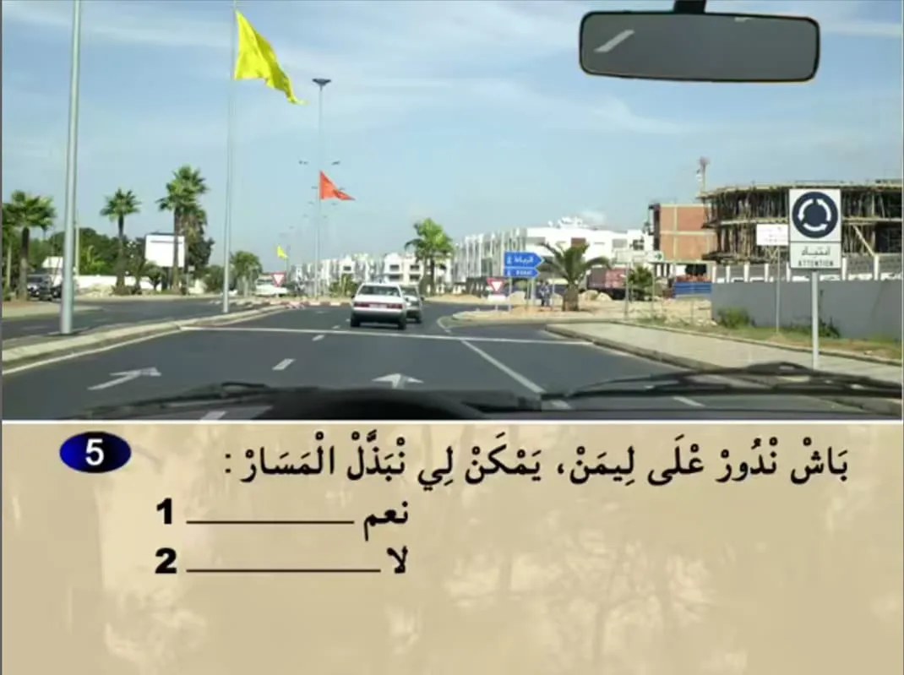
بيّن الجواب
الجواب الصحيح: 2
لا يمكنني تغيير المسلك والانحياز للجهة اليمنى لكي أنعطف إلى اليمين لأنه يوجد خط متّصل يمنعني من أن اتخطّاه.
السؤال 6
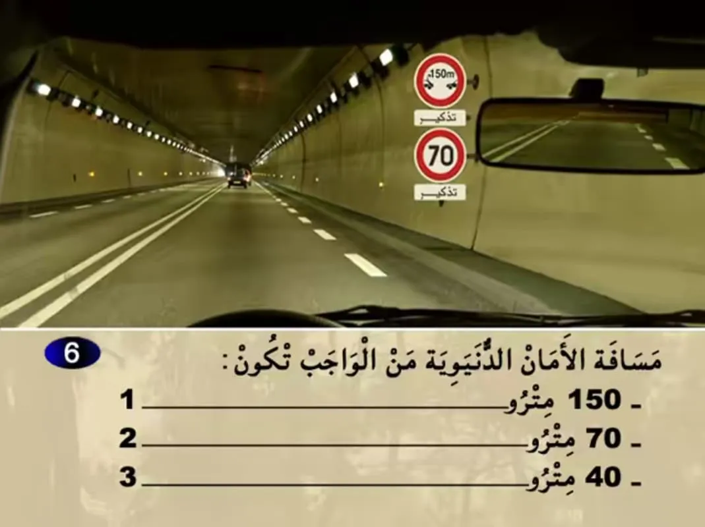
بيّن الجواب
الجواب الصحيح: 1
تحديد السرعة فهو 70 كلم في الساعة كما تشير إليه الإشارة الطّرقية، أمّا بالنسبة لمسافة الأمان الدنيوية فكما تشير الإشارة الطّرقية فيجب أن تكون على الأقل 150 متر بني وبين العربة التي تتواجد أمامي.
السؤال 7
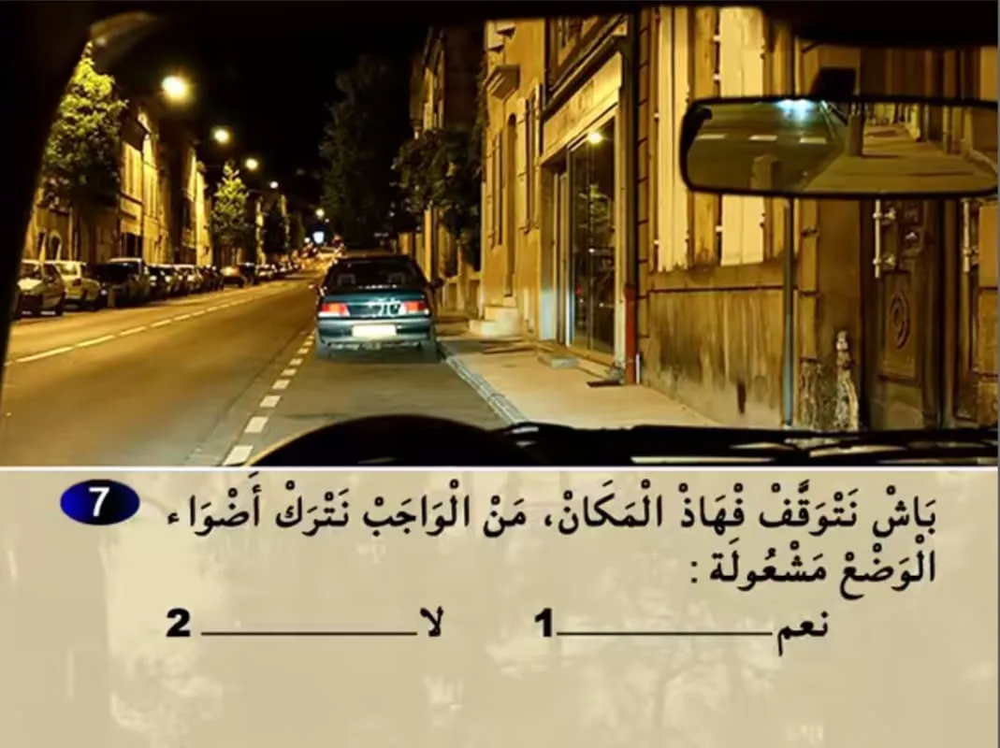
بيّن الجواب
الجواب الصحيح: 2
في هذا المكان لكي أقوم بالتوقّف فليس من الواجب عليّ أن أترك أضواء الوضع مشتغلة، لأنه توجد إنارة الشارع.
السؤال 8
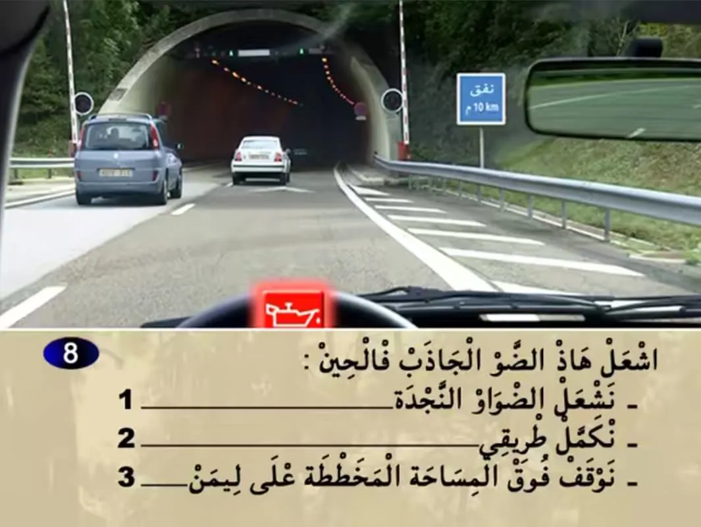
بيّن الجواب
الجواب الصحيح: 1 و 3
الحالة الوحيدة التي لا نقف فيها عند اشتعال الضوء الأحمر بالنسبة للرموز الموجودة داخل السيارة فهي عندما يشتغل الضوء الأحمر لبطارية السيّارة، لأنه يمكننا من إكمال الطريق نقوم بالتحقق منه، أما باقي الإشارات عندما تشتغل باللون الأحمر فيجب علينا أن نقوم بتشغيل أضواء النّجدة ونقوم بالوقوف في المساحة المخططة على اليمين في الحين. لأنه لا يمكن لنا إكمال الطريق.
السؤال 9
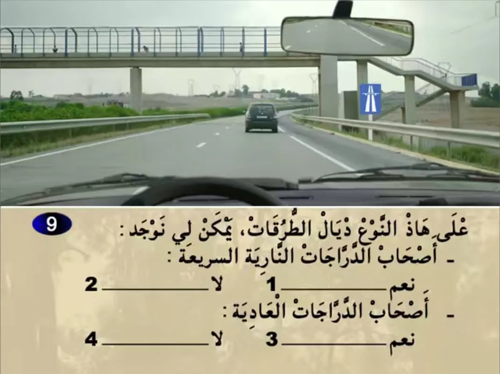
بيّن الجواب
الجواب الصحيح: 1 و 4
نتواجد في طريق سيّار، وفيه يمكن أن نجد أيضا أصحاب الدراجات النارية السريعة (أصحاب رخصة السياقة)، لكن لا يمكننا إيجاد أصحاب الدراجات العادية لأنه ممنوع عليهم السياقة في الطريق السيار.
السؤال 10
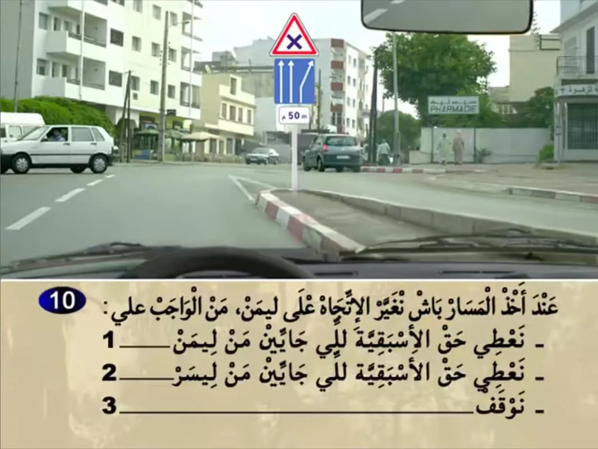
بيّن الجواب
الجواب الصحيح: 1
العلامة الطرقية تشير إلى وجود ملتقى الطّرق، ولكي أقوم بتغيير الاتجاه إلى اليمين في ملتقيات الطرق فدائما ما أعطي حق الأسبقية للعربات القادمة من اليمين.
السؤال 11
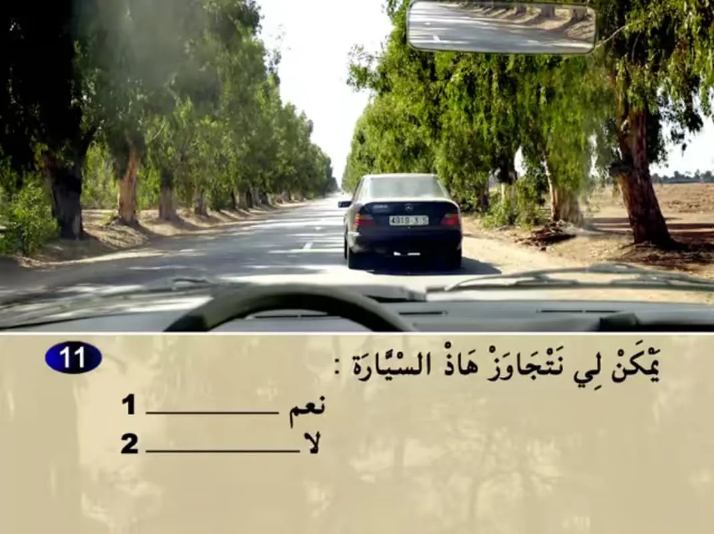
بيّن الجواب
الجواب الصحيح: 1
لا توجد سيارة تستعد للتّجاوز من خلفي ولا توجد سيارة قادمة في الاتجاه المعاكس، كما أن التّشوير الأفقي الخط المتقطّع يسمح لي بالتجاوز، إذن يمكنني التّجاوز.
السؤال 12
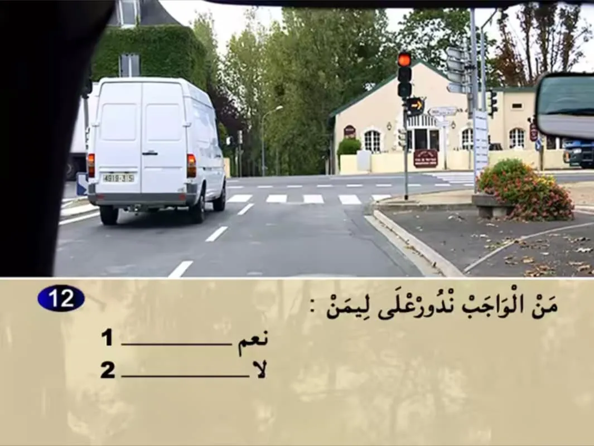
بيّن الجواب
الجواب الصحيح: 2
بالنسبة للسهم الأخضر المتواجد في الإشارة الضوئية الذي يشير إلى الجهة اليمنى فهو يشير فقط إلى أنه من الممكن الانعطاف إلى اليمين، وليس الإجبار للانعطاف إلى اليمين.
السؤال 13
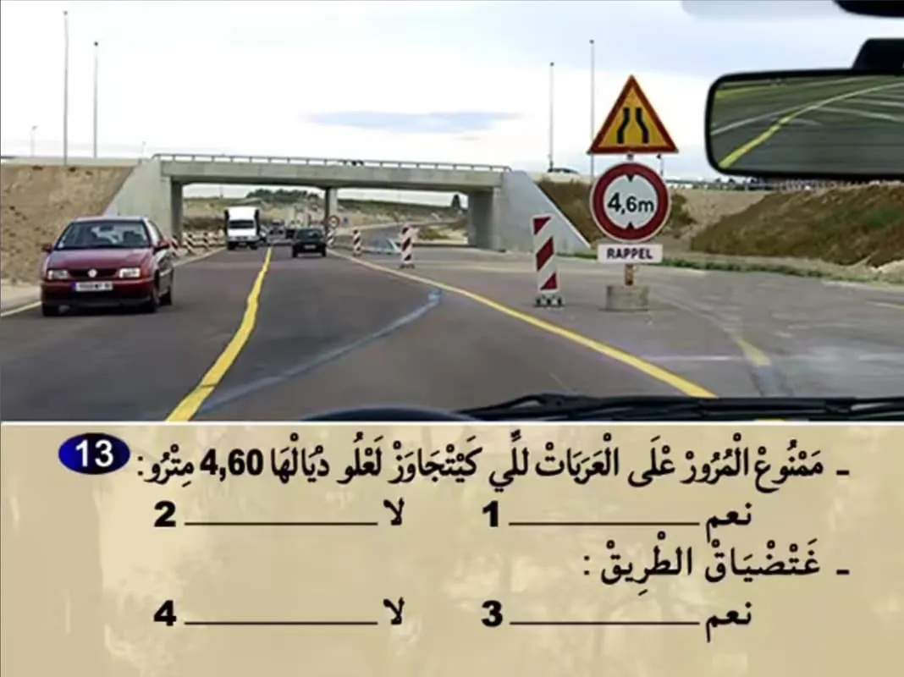
بيّن الجواب
الجواب الصحيح: 1 و 3
العلامة الطرقية الخاصة بالمنع فهي تشير على أن العربات التي يتجاوز علوّها ممنوعة من المرور، وبالنسبة للعلامة الصفراء المؤقتة فهي تشير إلى أن الطّريق سوف تضيق من الجهتين.
السؤال 14
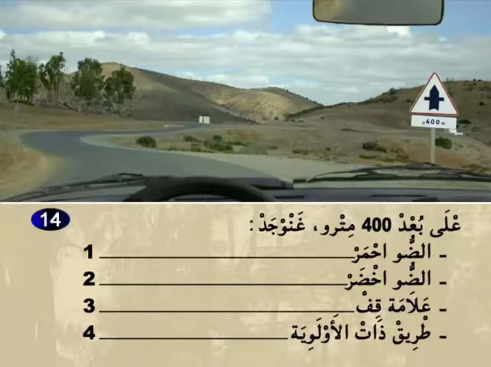
بيّن الجواب
الجواب الصحيح: 4
بالنسبة للعلامة الطّرقية فهي تشير على أنه على بعد 400 متر سوف أجد طريق ذات أولوية.
السؤال 15
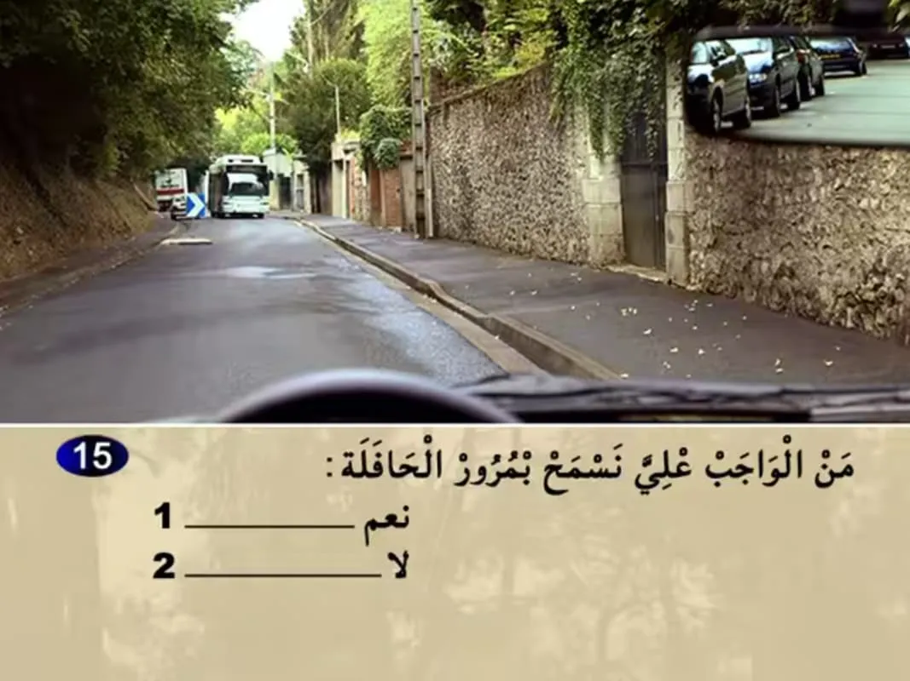
بيّن الجواب
الجواب الصحيح: 1
بالنسبة للحافلة فلقد قامت بتغيير اتجاهها نحو يسارها قليلا لكي تستطيع المرور لوجود أشغال في جهتها اليمنى، وأنا بعيد عنها، لذلك من الواجب عليّ أن أقوم بالسماح لها بالمرور لكي لا نعرقل حركة السّير.
السؤال 16
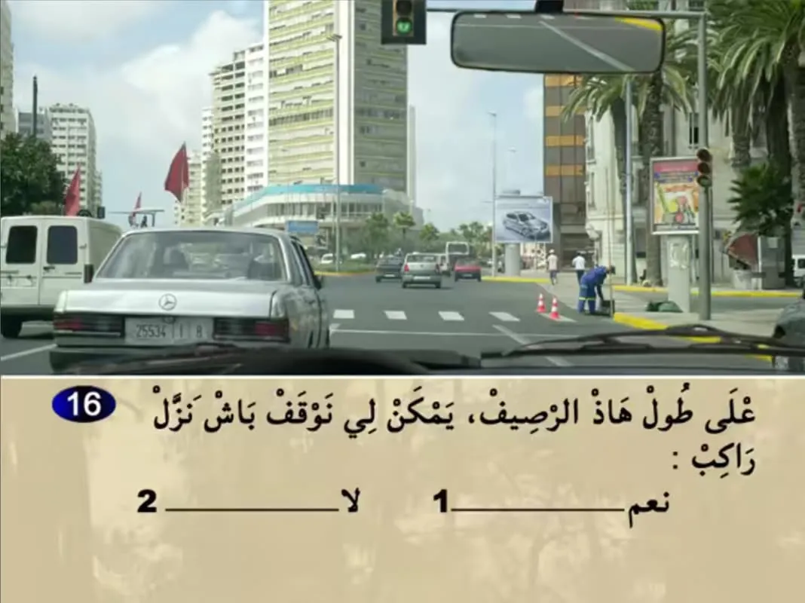
بيّن الجواب
الجواب الصحيح: 2
بالنسبة للرصيف فهو مصبوغ باللون الأصفر وفي هذه الحالة لا يمكننا الوقوف ولا يمكننا كذلك التوقّف.
السؤال 17
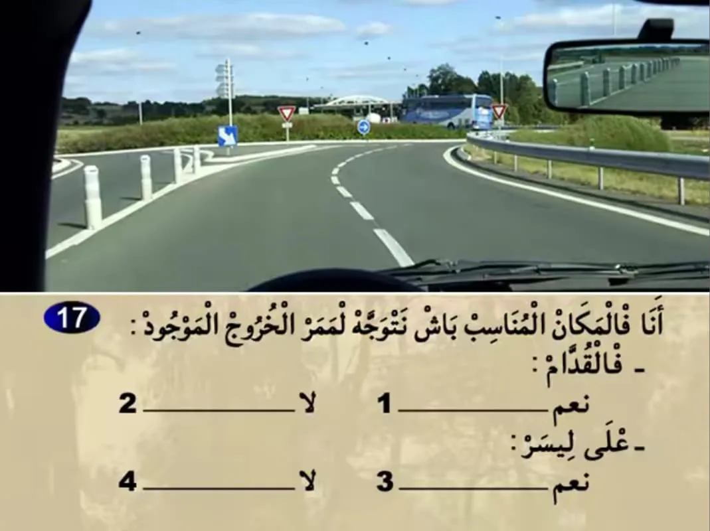
بيّن الجواب
الجواب الصحيح: 2 و 3
في (المدار) الرومبوان إذا قمنا بالسير في المسلك الموجود على اليسار كما هو الشأن الان فهذا يعني أني سوف أنعطف إلى اليسار بعد عمل الرومبوان، بالنسبة لكي أتوجه للأمام فيجب عليّ أن أكون متواجد في المسلك على اليمين، لذلك الان أنا في المكان المناسب لكي أتوجّه لممر الخروج الموجود على اليسار ولكننا لسنا في المكان المناسب لكي أتوجّه للممر الخروج الموجود في الأمام.
السؤال 18
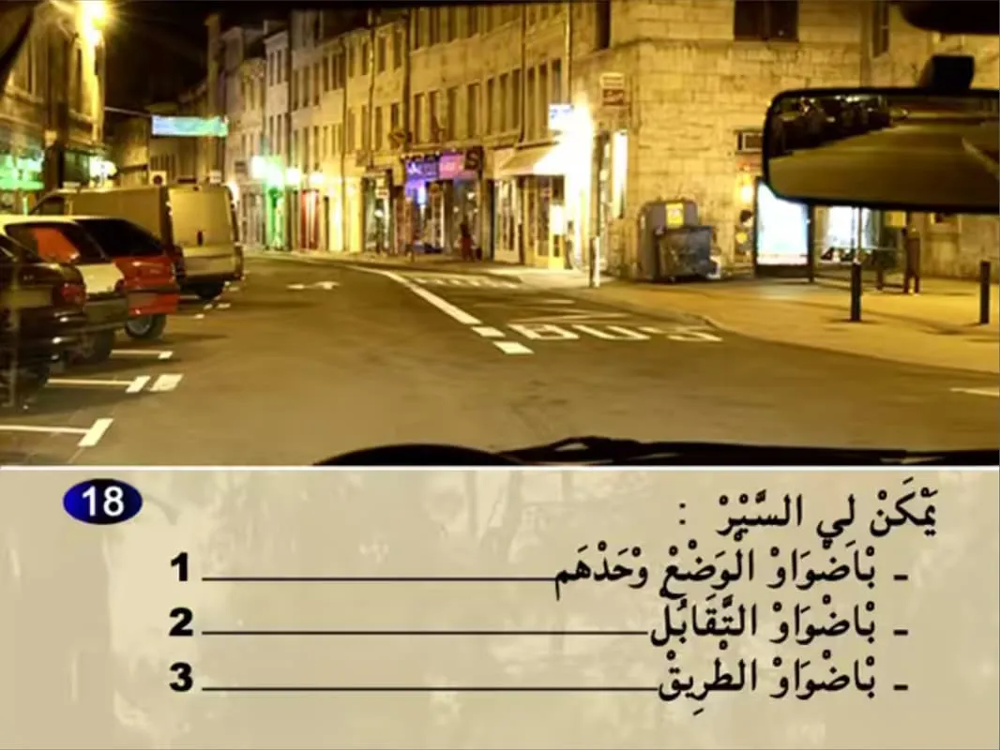
بيّن الجواب
الجواب الصحيح: 1 و 2
نتواجد في الفترة الليلية وداخل المجال الحضري، عند وجود إنارة الشارع فيمكنني استعمال أضواء الوضع وحدهم أو أضواء التّقابل للسّير. (لا يمكن استعمال أضواء الطّريق لأنها تستعمل خارج المدينة وبالضبط في الطريق الخالية من السائقين والتجمع السكني، أو أثناء التنبيه به. الإجابة الصّحيحة 1 و 2.
السؤال 19
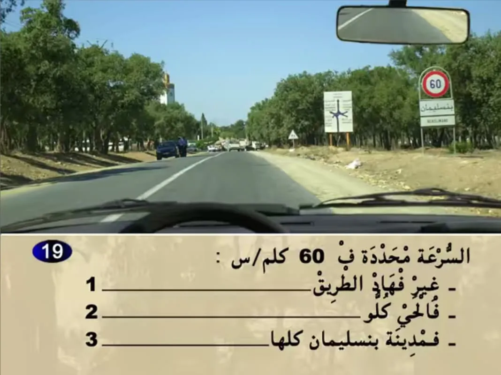
بيّن الجواب
الجواب الصحيح: 3
الإشارة الطرقية تعني تحديد السرعة في 60 كلم في الساعة بالنسبة لمدينة بنسليمان كلّها.
السؤال 20
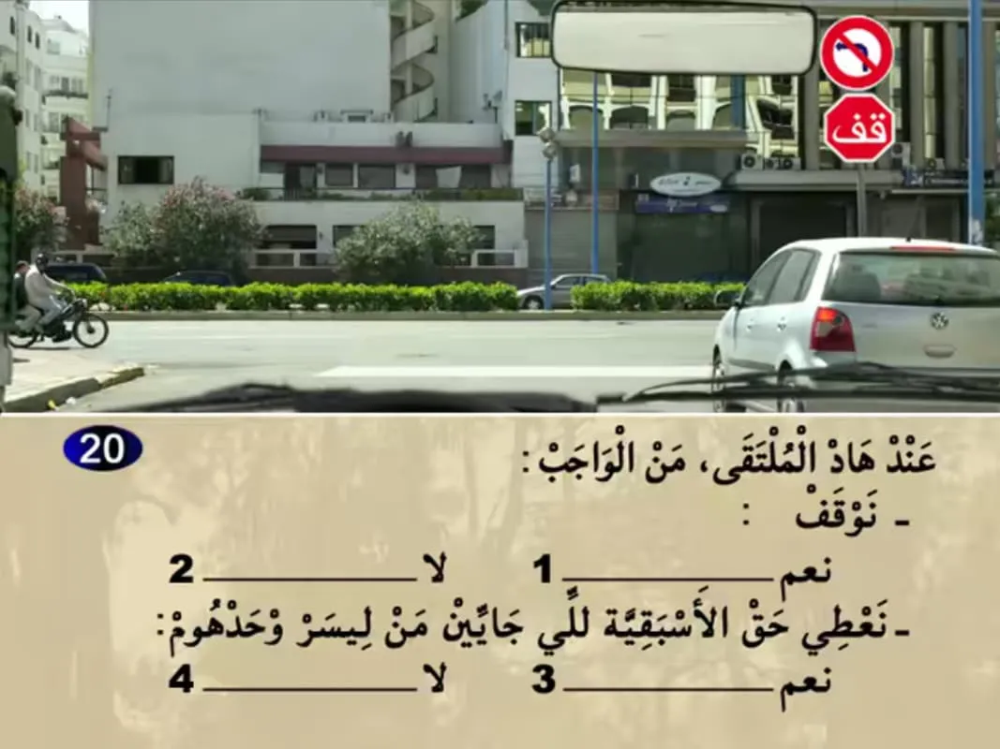
بيّن الجواب
الجواب الصحيح: 1 و 3
توجد علامة قف إذن من الواجب عليّ أن أقف عند ملتقى الطرق، ومن الواجب عليّ إعطاء حق الأسبقية بالنسبة للعربات القادمة من الجهة اليسرى فقط لأنه لا توجد عربات قادمة من الجهة اليمنى كما توضّح الإشارة الطرقية.
السؤال 21
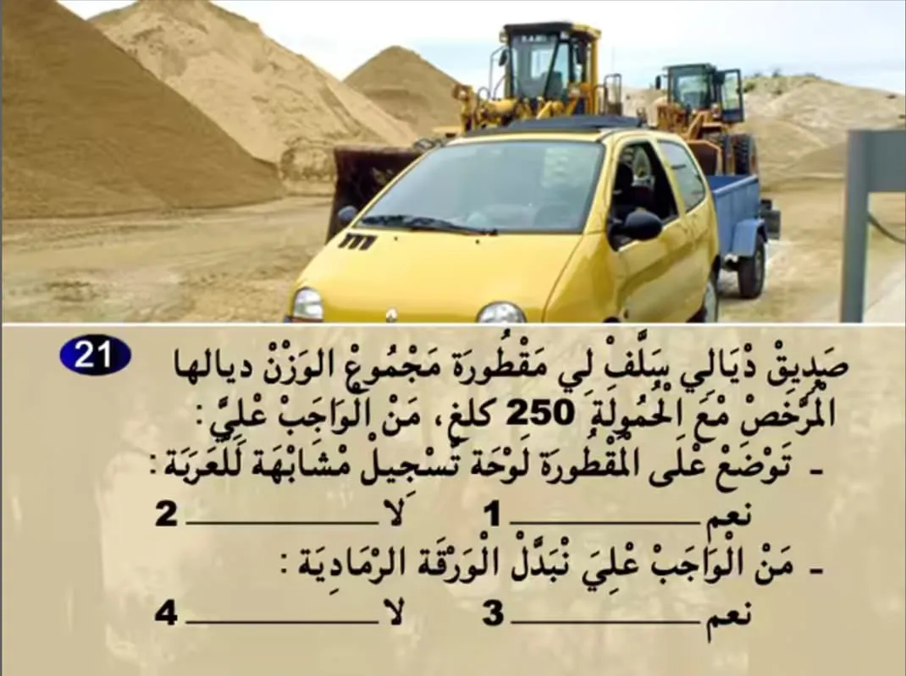
بيّن الجواب
الجواب الصحيح: 1 و 4
عند جر مقطورة من الخلف فيجب علي وضع لوحة تسجيل من خلف المقطورة تحمل نفس أرقام التسجيل السيارة، وفي هذه الحالة ليس واجب عليّ أن أقوم بتغيير الورقة الرمادية لأن الحمولة 250 كلغ. (يجب تغيير الورقة الرمادية عندما كون حجم المقطورة 750 كلغ فما فوق).
السؤال 22
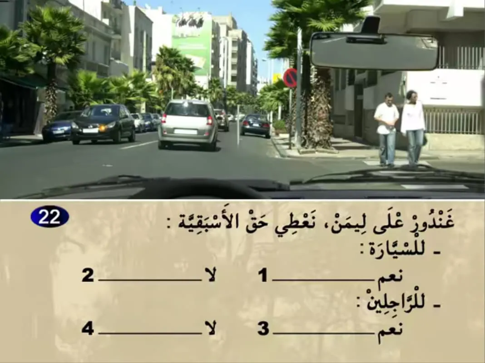
بيّن الجواب
الجواب الصحيح: 2 و 3
الأسبقية يجب أن أقوم بإعطائها للسيارات القادمة من اليمين، في هذه الحالة لا أعطي حق الأسبقية للسيارة السوداء لأنها متواجدة على اليسار، وبالنسبة للراجلين فيجب عليّ إعطائهم حق الأسبقية والسماح لهم بالمرور أولا.
السؤال 23
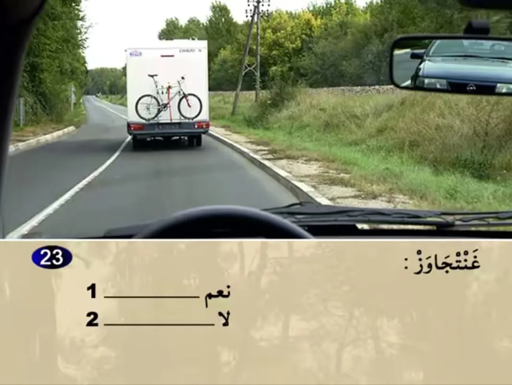
بيّن الجواب
الجواب الصحيح: 2
التّشوير الأفقي الخط المتّصل يمنعني من التجاوز، لا يمكنني التجاوز.
السؤال 24
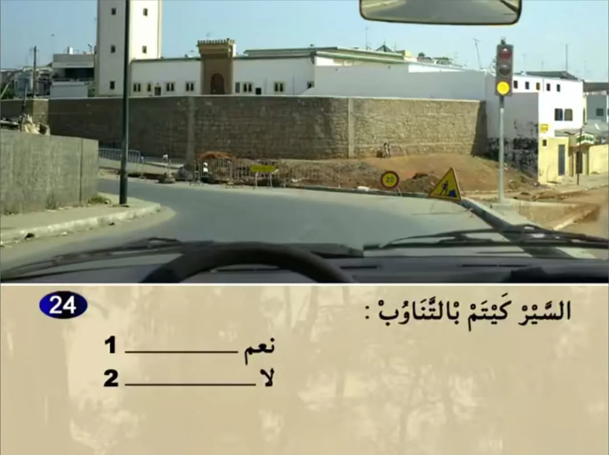
بيّن الجواب
الجواب الصحيح: 2
يوجد أشغال كما توضح العلامة الطرقية المؤقتة، كما أن العلامة الأخرى تشير إلى تحديد السرعة ب 20 كلم في الساعة، وتوجد كذلك إشارة ضوئية باللون البرتقالي رفراف، لا توجد إشارة مرورية تشير إلى أن السير يتم بالتناوب.
السؤال 25
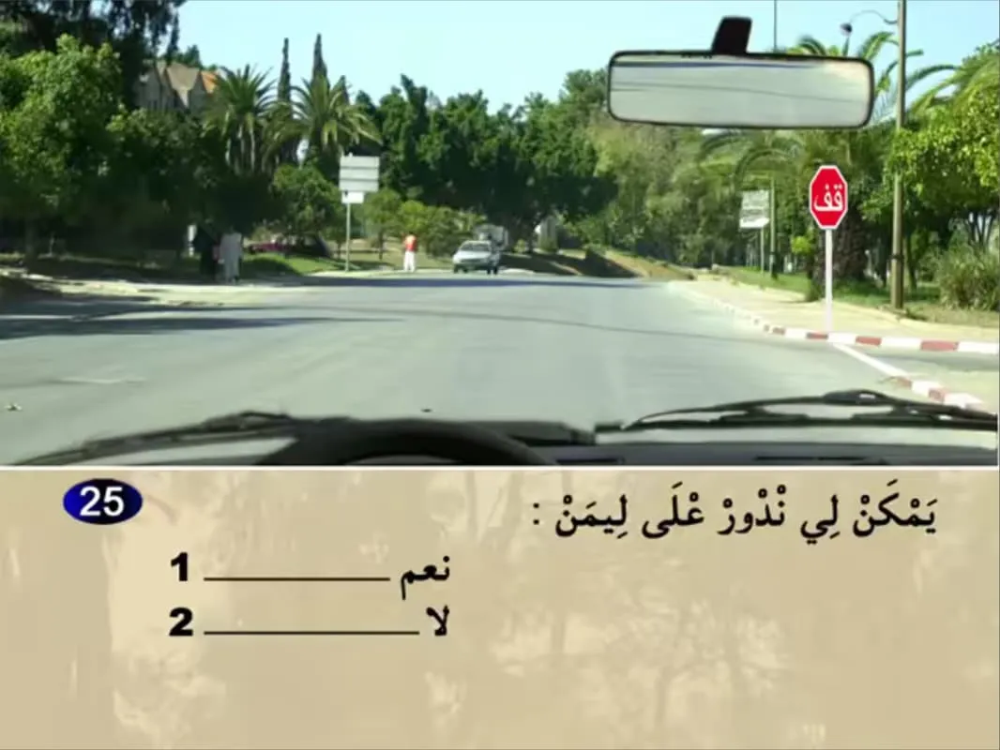
بيّن الجواب
الجواب الصحيح: 2
في هذه الحالة لا يمكننا الانعطاف إلى اليمين، لأنه يوجد تشوير أفقي خط مرسوم على الأرض على طول تلك الطريق، وهو يعني أن الطريق ذات إتجاه واحد، العربات القدمة منه فقط، ويشير على أن الطريق ممنوع المرور بها. لا يمكنني الانعطاف على اليمين.
السؤال 26
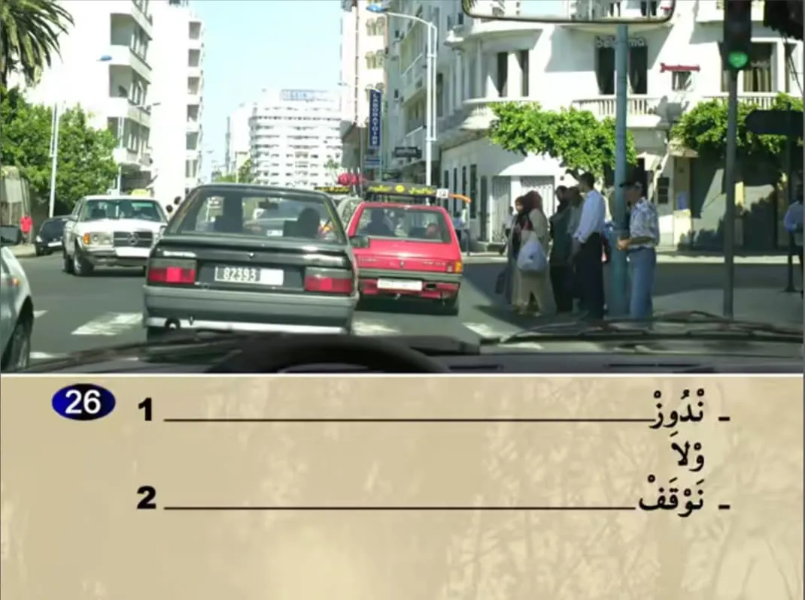
بيّن الجواب
الجواب الصحيح: 1
الإشارة الضوئية خضراء تسمح لي بالمرور، بالنسبة للراجلين فهم واقفون وهذا واضح من خلال السيارات التي أمامي والتي قامت بالمرور، لذلك أنتبه وأقوم بالمرور أنا أيضا بما أنّ الإشارة الضوئية تسمح لي بذلك.
السؤال 27
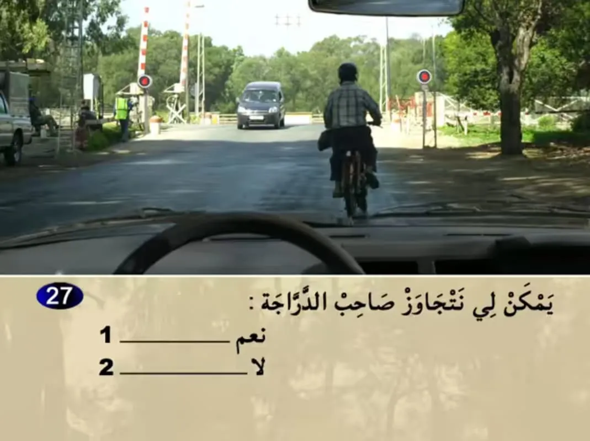
بيّن الجواب
الجواب الصحيح: 2
لا يمكن تجاوز صاحب الدراجة، أولا لأنه توجد عربة قادمة من الاتجاه المعاكس، وثانيا يوجد ضوء أحمر عند السّكة يجبرني على الوقوف.
السؤال 28
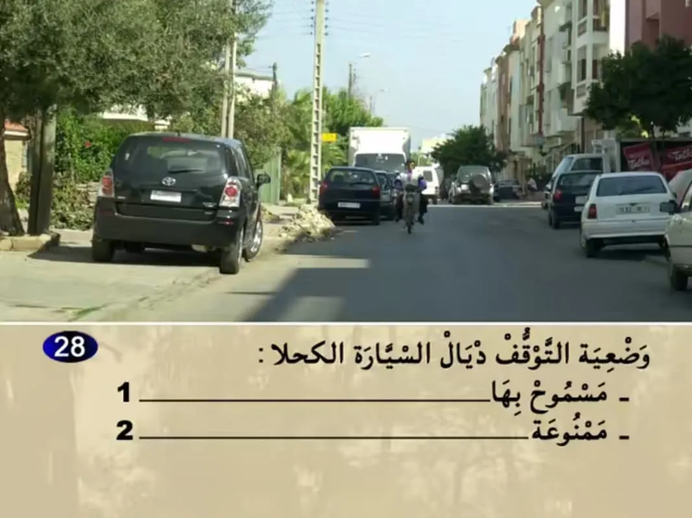
بيّن الجواب
الجواب الصحيح: 2
بالنسبة للسيارة السوداء فهي متوقفة بشكل غير قانوني، لأن الطريق ذات اتجاهين أي أن هنالك سيارات تأتي من الاتجاه المعاكس، يمكن للسيارة السوداء التوقف فقط على الجهة اليمنى وليس على الجهة اليسرى. إذن وضعية التوقّف للسيارة السوداء ممنوعة.
السؤال 29
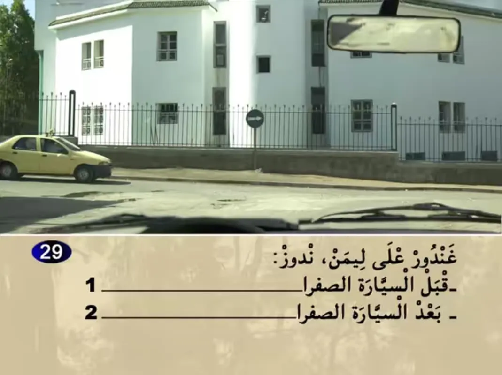
بيّن الجواب
الجواب الصحيح: 1
سوف أنعطف إلى اليمين، بالنسبة لملتقى الطرق فان الأسبقية للعربات القادمة من اليمين، وأنا أتواجد على يمين السيارة الصفراء، يجب عليها إعطائي حق الأسبقية، إذن أقوم بالمرور قبل السيارة الصفراء.
السؤال 30
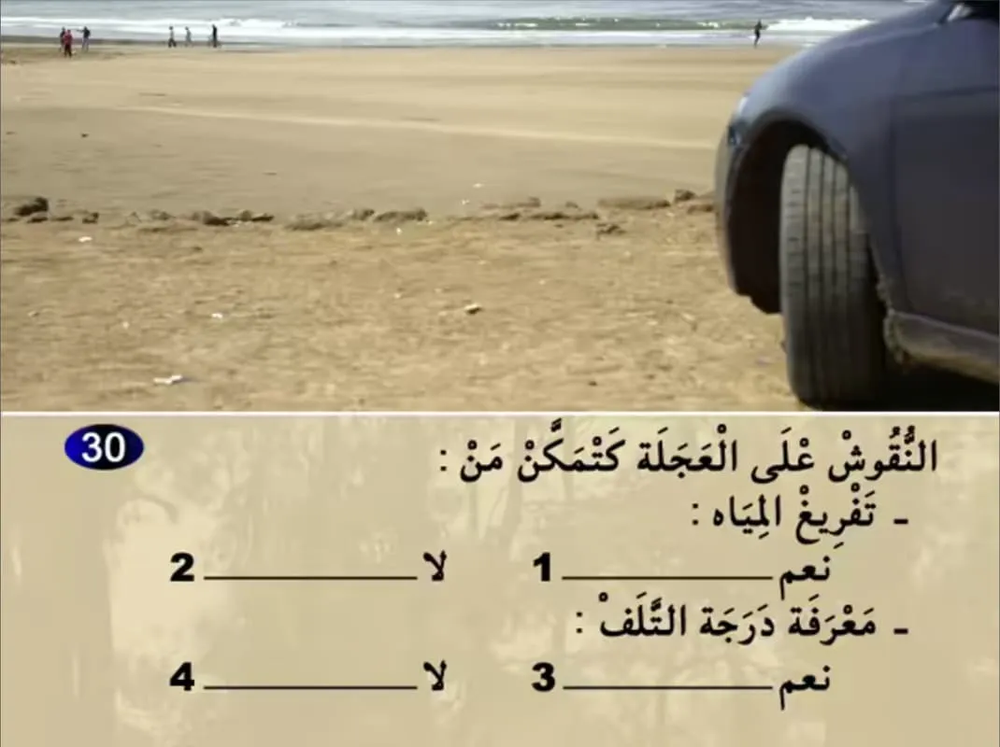
بيّن الجواب
الجواب الصحيح: 1 و 3
بالنسبة للنّقوش الموجودة على العجلة فهي تساعد في تفريغ المياه خصوصا في أوقات هطول الأمطار، كما أن النقوش من خلالها نعرف حالة العجلة وهل هي جيّدة أم لا ومعرفة درجة التلف بصفة عامة.
السؤال 31
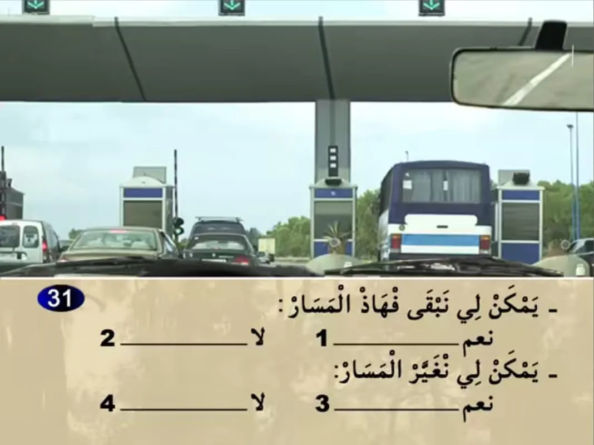
بيّن الجواب
الجواب الصحيح: 1 و 4
في الطريق السيّار وفي محطة الاداء الخاصة به فلا يمكننا تغيير المسار إلى الجهة الأخرى للدفع مثلا، فيجب علينا البقاء في المسار الذي قمنا بالسير فيه مسبقا وانتظار إلى حين وصول دورنا.
السؤال 32
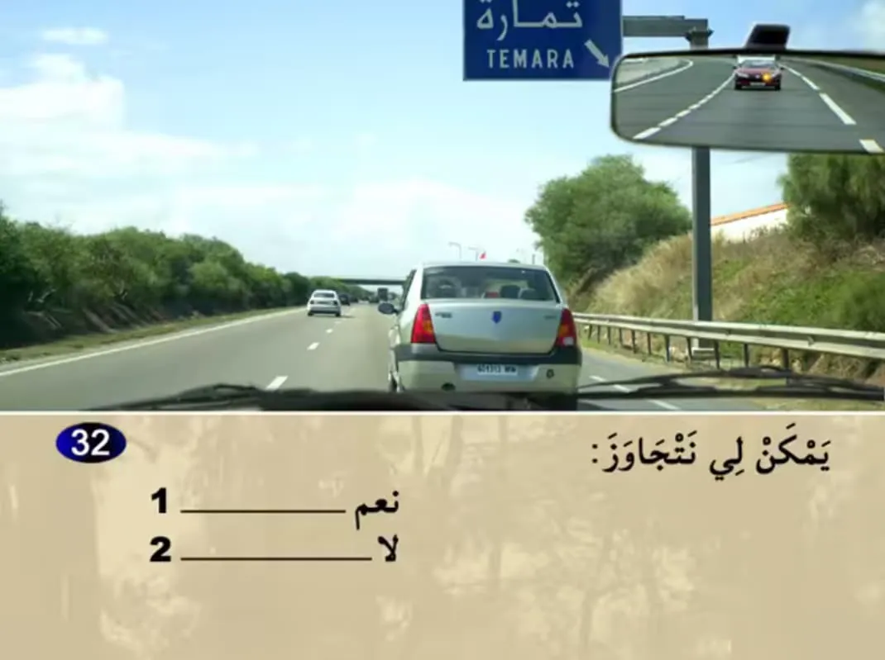
بيّن الجواب
الجواب الصحيح: 1
التّشوير الأفقي الخط التقطّع يسمح لي بالتجاوز، بالنسبة للسيارة التي توجد خلفي والتي قامت بتشغيل ضوء تغيير الاتجاه فإن الضوء يوجد على الجهة اليمنى بالنسبة لي وهو يشير على أن السيارة لا تريد أن تتجاوزني ولكنها تريد السير في المسلك المتواجد على أقصى اليمين للذهاب إلى مدينة تمارة، إذن يمكنني التجاوز.
السؤال 33
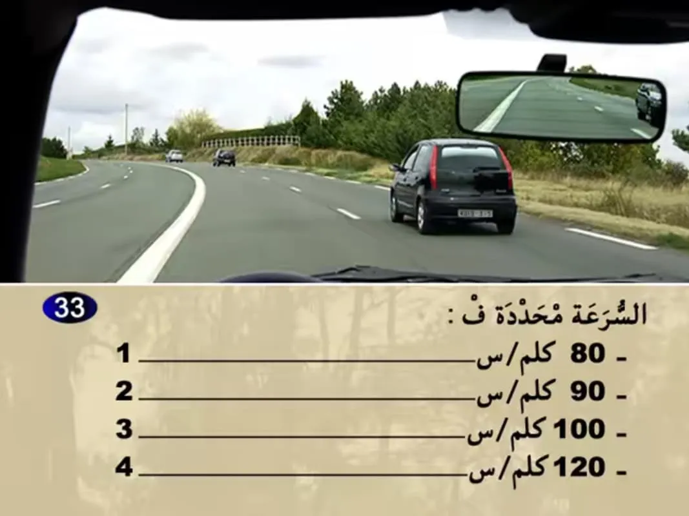
بيّن الجواب
الجواب الصحيح: 3
نتواجد في طريق وطنية، والسّرعة في طريق وطنية محددة في 100 كلم في الساعة. (بالنسبة للطريق السيار فالسرعة محددة في 120 كلم في الساعة).
السؤال 34
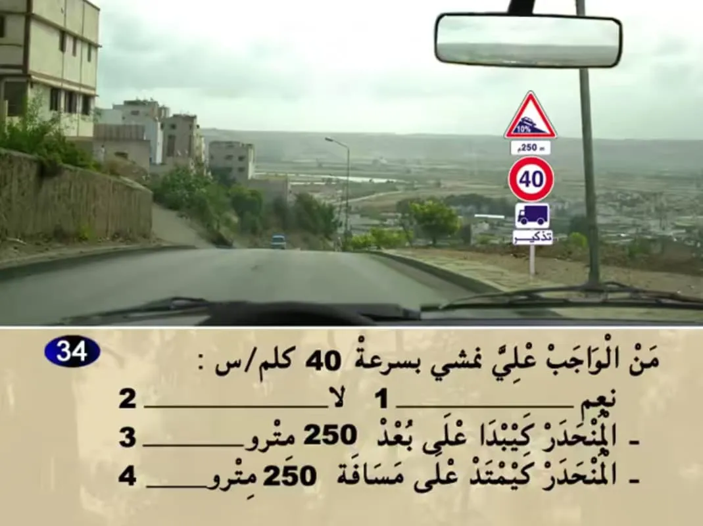
بيّن الجواب
الجواب الصحيح: 2 و 3
يوجد علامة طرقية لتحديد السرعة في 40 كلم في الساعة وهي خاصة بالشاحنات كما توضّح العلامة التكميلية، إذن ليس من الواجب عليّ السير بسرعة 40 كلم في الساعة، بالنسبة للمنحدر فيبدأ على بعد 250 متر (ليس على إمتداد 250 متر لأنه لا توجد أسهم الامتداد).
السؤال 35
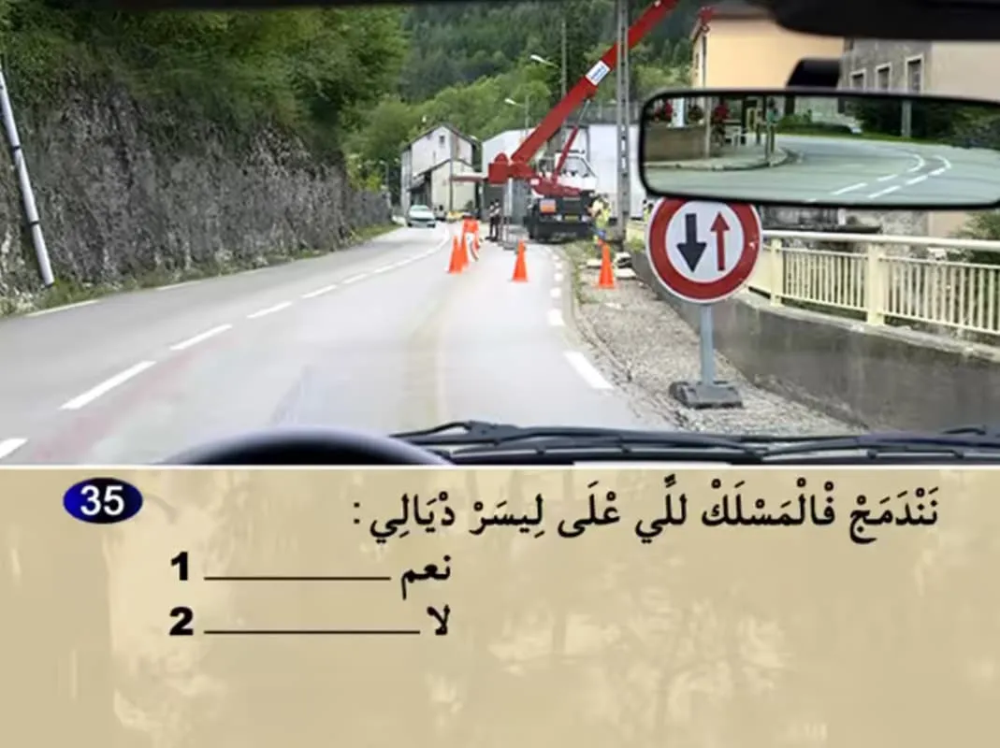
بيّن الجواب
الجواب الصحيح: 2
بالنسبة للعلامة الطّرقية فهي تعني أن الأسبقية للسيارات القادمة من الاتّجاه المعاكس (السّهم الأسود)، وكما تظهر الصورة فيوجد سيارة قادمة، يجب عليّ الانتظار لمرور السيارة وبعد ذلك يمكنني الاندماج في المسلك الموجود على اليسار والمرور.
السؤال 36
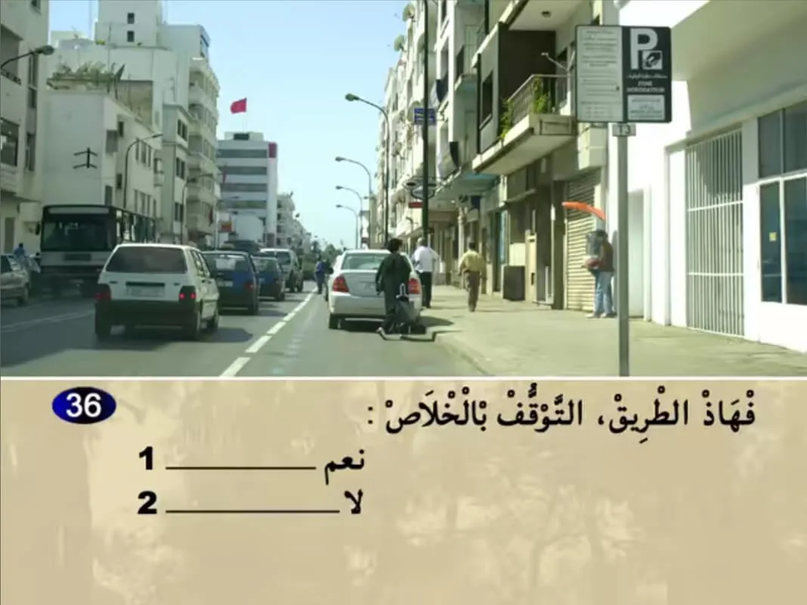
بيّن الجواب
الجواب الصحيح: 1
العلامة التي يوجد فيها حرف P فهي تشير على أن التوقف ليس بالمجان.
السؤال 37
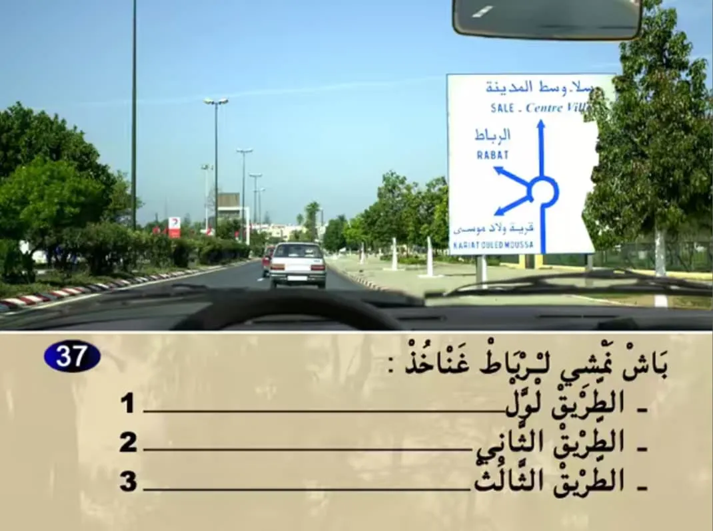
بيّن الجواب
الجواب الصحيح: 2
لكي أذهب إلى مدينة الرباط يجب عليّ السير في الطريق الثاني كما توضّحه العلامة الطرقية، الطريق الأول هو طريق سلا - وسط المدينة، والطريق الخاص بمدينة الرباط هو الطريق الثاني.
السؤال 38
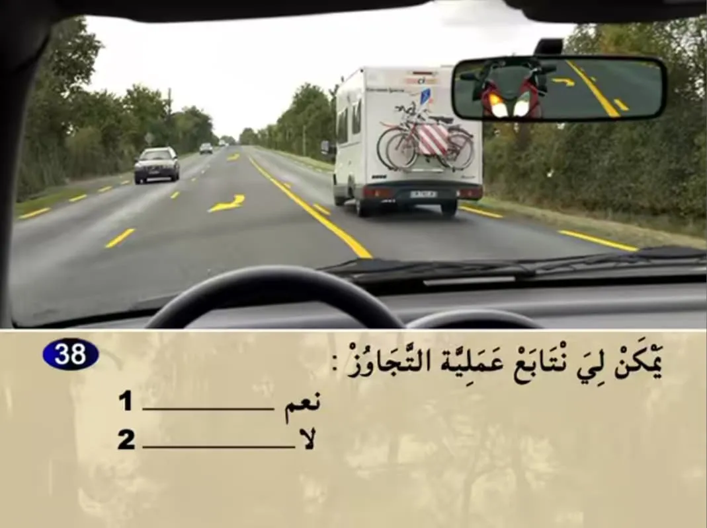
بيّن الجواب
الجواب الصحيح: 1
يمكنني متابعة عملية التّجاوز، بالنسبة لأسهم الانحياز فهي تخص العربات القادمة من الاتجاه المعاكس.
السؤال 39
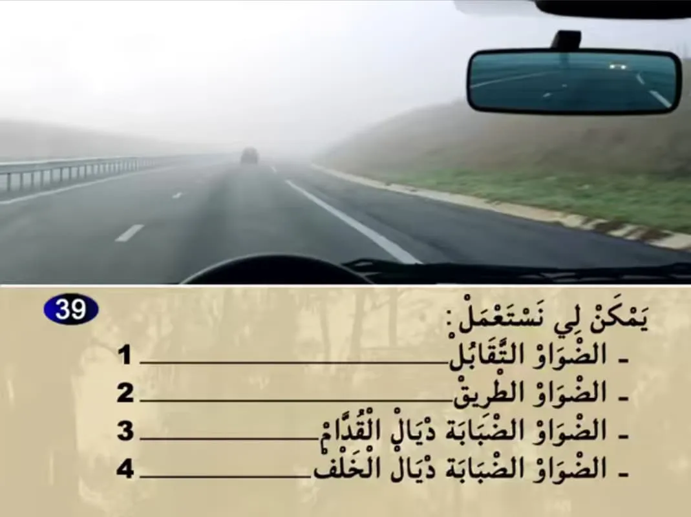
بيّن الجواب
الجواب الصحيح: 1 و 3 و 4
في وجود الضباب فاستعمل أضواء التّقابل، أضواء الضباب الأمامية وأضواء الضباب الخلفية.
السؤال 40
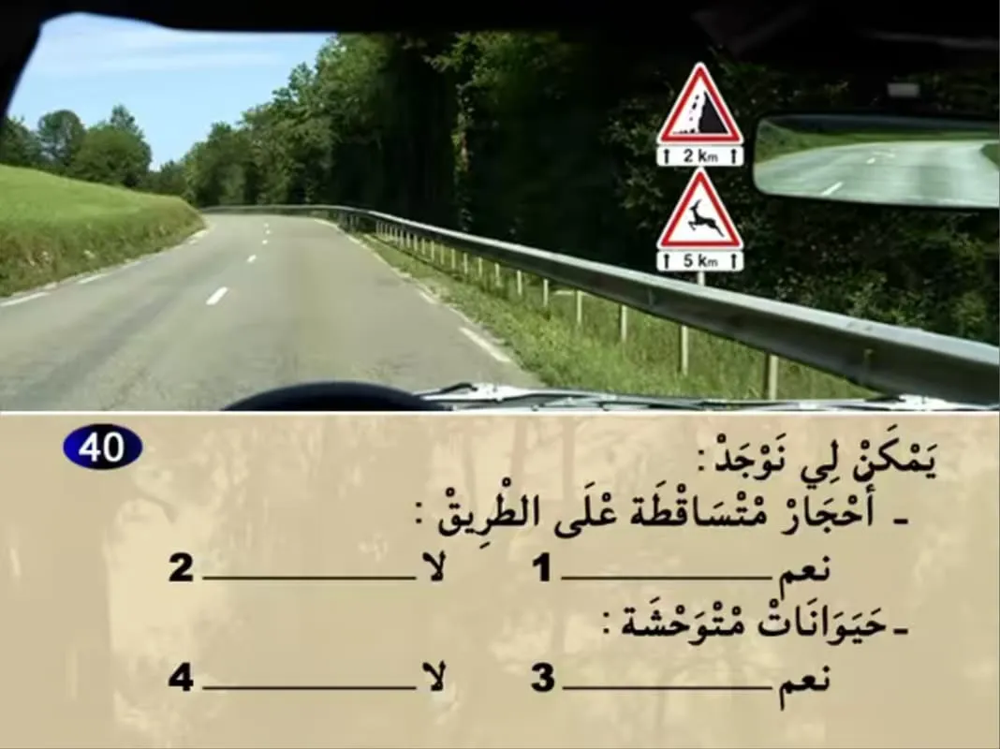
بيّن الجواب
الجواب الصحيح: 1 و 3
بالنسبة للعلامات الطّرقية فهي تشير على أنه على طول 2 كيلومتر سوف أجد أحجار متساقطة، وأيضا على طول 5 كيلومتر سوف أجد حيوانات متوحشة كما تشير إليه الإشارة الطرقية الثانية.